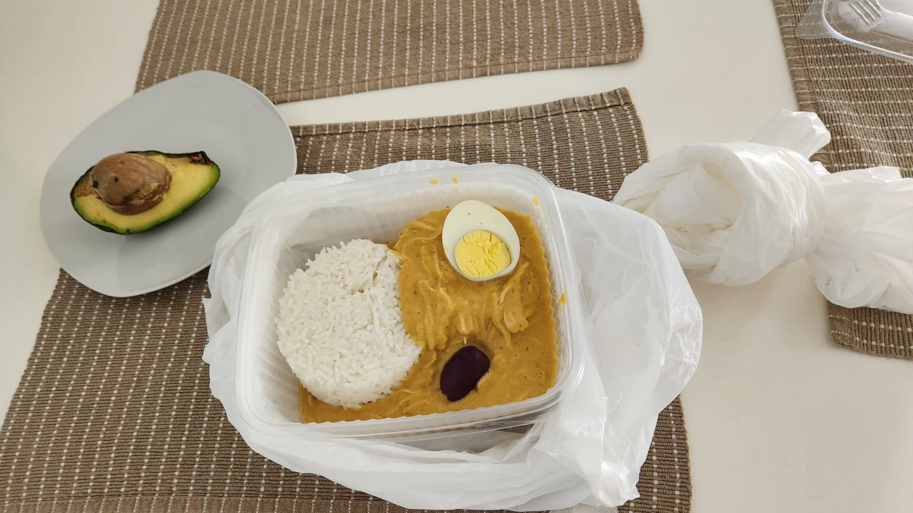

Aji de Gallina

Ingredients
- Aji (Yellow Chilli)
- Bread
- Chicken Breast
- Garlic (Ground)
- Onion (Chopped)
- Potatoes
Preparation
- Place bread on a blender with milk and butter then blend
- On a large, hollow pan, boil Chicken and the potatoes
- On a small, shallow pan with oil, fry ground garlic along with chopped onion and some Aji
- As soon as fully cooked (marble white), shred the chicken and add to the shallow pan with its contents
- Slowly add the stew from the boiled chicken to the shallow pan
- Add the blended bread to the mixture
- Add the potatoes to the mixture